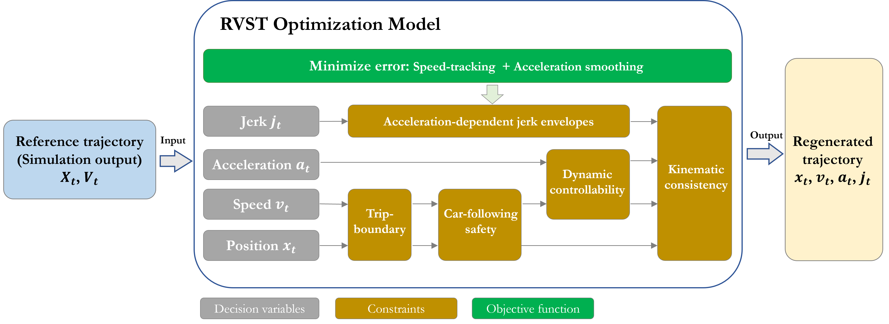
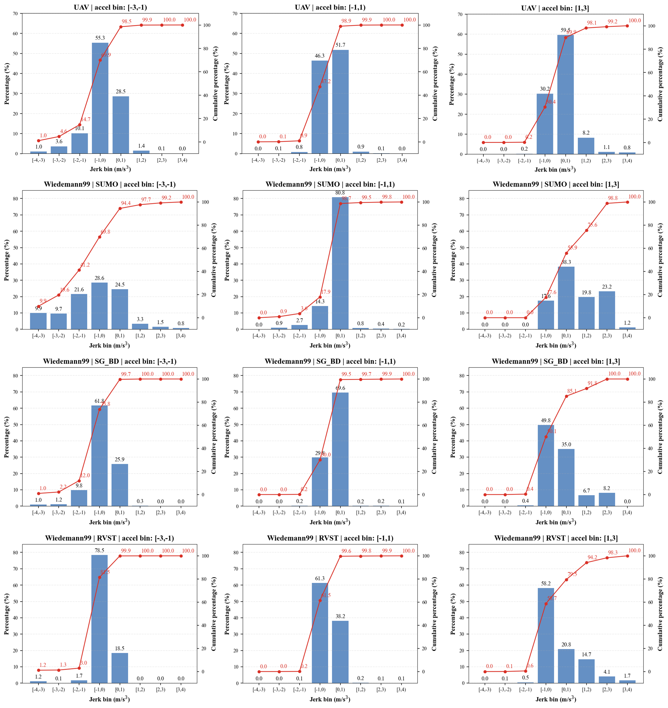
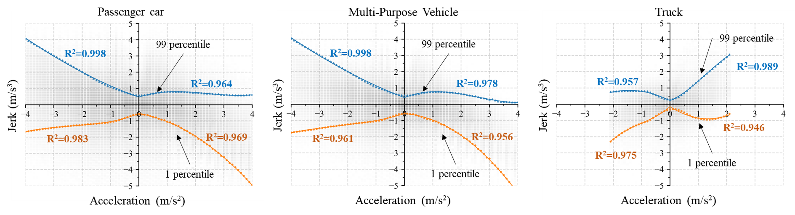
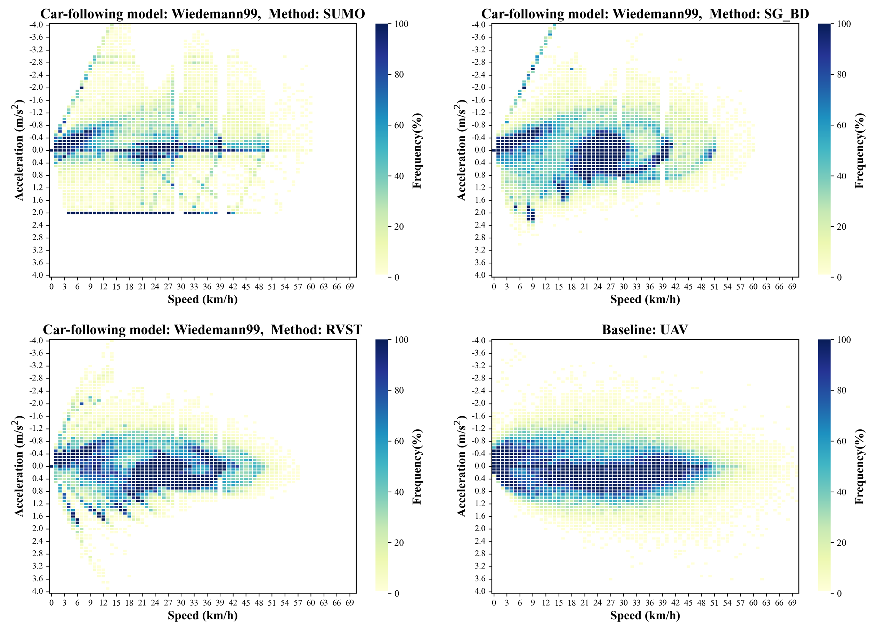
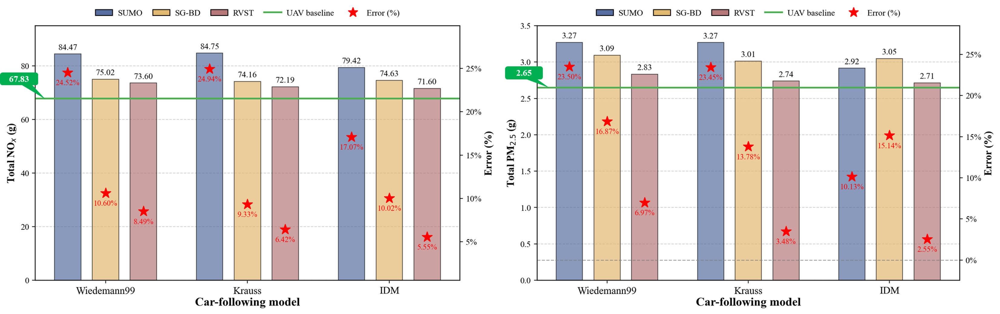
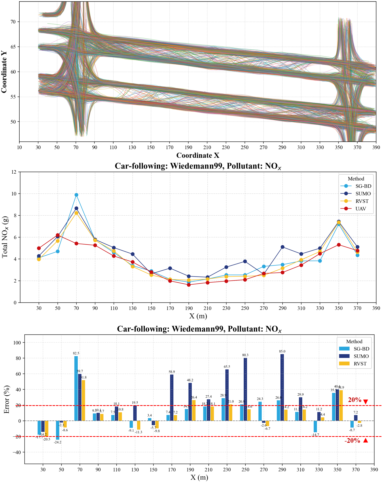
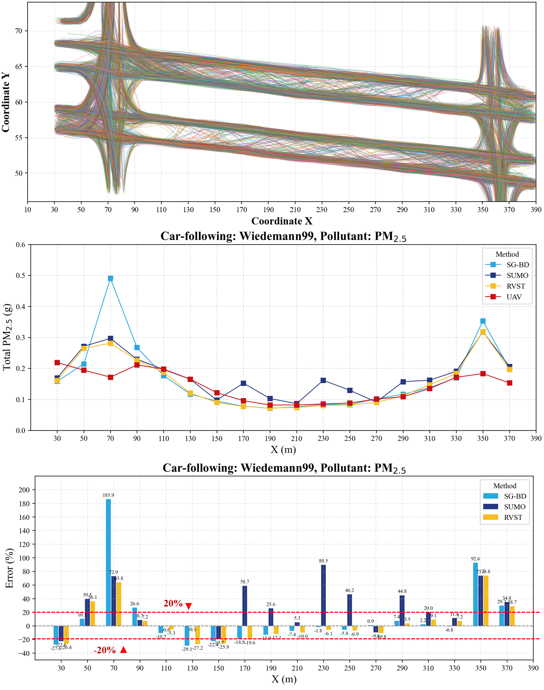

What We Propose
Our proposed RVST (Regenerating Vehicle Speed Trajectories) is a simulation-independent, emission-oriented trajectory re-generation framework. It bridges the gap between raw microsimulation output and accurate, physically plausible emission estimation. Our main contributions are:
Incorporates acceleration-dependent jerk envelopes to generate physically plausible and car-following-feasible speed trajectories.
Developed to reproduce the end-to-end pipeline — from trajectory re-generation to emission estimation and spatial emission-field assessment.
Methodology
The RVST framework re-generates speed trajectories from raw microsimulation output through a constrained optimization pipeline that enforces physical plausibility and emission accuracy. It follows a clean three-stage workflow:
trajectories (SUMO FCD)
speed trajectory optimization
emission field mapping

Case Study
Real-world validation on a signalized urban corridor with UAV-reconstructed trajectories and multiple car-following models calibrated against field measurements.
Shanghai
+ CV reconstruction
Krauss · IDM
Savitzky-Golay
Performance Evaluation
We evaluated RVST by comparing re-generated speed trajectories and resulting emission estimates against ground truth UAV-based measurements across three car-following models (Wiedemann99, Krauss, IDM) and baseline SG-BD smoothing.






Acknowledgement
This work was in parts supported by the EU Horizon Europe Framework under grant agreement 101135724 (LUMINOUS).
Citation
If you use our framework or dataset, please cite our work: